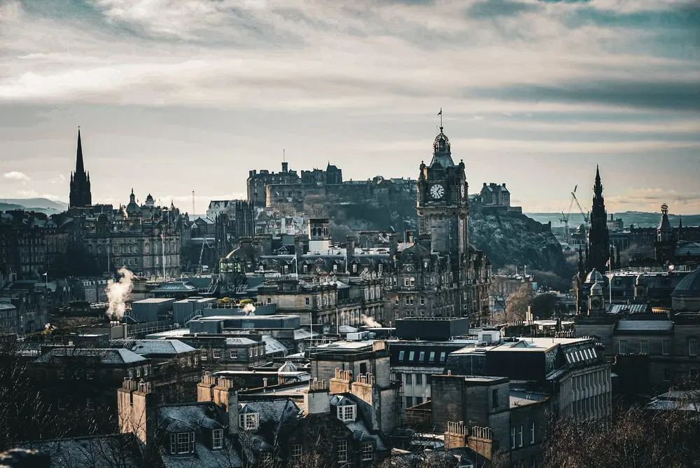

How Many Days in Edinburgh?
A Realistic Plan
A thoughtful guide to historic streets, dramatic landscapes, and leaving enough room in your itinerary to simply wander.

First impressions: leave room to wander
Approach Edinburgh as a place to experience rather than a list to complete. Begin with a short walk, find somewhere to pause, and resist the temptation to fit every landmark into your first afternoon.
The contrast between its medieval Old Town and planned Georgian New Town is central to the city's character. Together, these historic districts form a UNESCO World Heritage Site. [1]
Our suggestion is simple: choose one main experience each day, then let the spaces between your plans become part of the journey. A longer lunch or an unexpected detour need not count as time lost.
The Old Town: follow the smaller streets
Edinburgh's Old Town follows a ridge from the castle towards the Palace of Holyrood. Narrow lanes, known as closes, branch away from its main spine, creating a distinctive historic street pattern. [1]
Make this your day for exploring slowly. Walk a short stretch, notice the changing building heights, and look for publicly accessible passages rather than rushing straight from one end to the other.
If a castle visit is a priority, build your day around it. Check the attraction's official website for current admission arrangements before making plans, and leave time afterwards for a relaxed meal instead of another tightly scheduled stop.
Choose fewer stops. Give each one more attention.
Respect residential entrances and private courtyards. A beautiful doorway may belong to somebody's home, not a visitor attraction.
The New Town: a different rhythm
The New Town offers a contrasting approach to city design: planned streets, terraces, squares, and neoclassical architecture rather than the Old Town's organically developed medieval layout. [1]
Give this part of your visit a different pace. Instead of searching for the next major landmark, pay attention to the arrangement of streets, repeated architectural details, and the way buildings frame a view.
Consider keeping an afternoon flexible for a café, browsing, or an indoor cultural visit. Choose somewhere that genuinely interests you rather than adding a stop only because it appears on an itinerary.
Holyrood Park: make space for the landscape
Holyrood Park brings hills, crags, and lochs into the city landscape. Arthur's Seat is its dominant landmark, part of an ancient volcanic setting with views across Edinburgh and beyond. [2]
Treat an outdoor visit as a flexible part of your trip, not an obligation to reach a summit. Choose a route appropriate to your fitness, footwear, available daylight, and the conditions on the day.
Check the official park notices and weather forecast before setting out. Bring water and suitable layers, follow local signs, and turn back if the route or conditions feel beyond your comfort level.
You do not need a summit photograph to enjoy the park. Choose a shorter walk or postpone your outdoor plans if the weather is unsuitable.
A suggested three-day stay
Use this as a flexible framework rather than a timetable. Swap days around to suit the weather, your interests, and any advance reservations.
Day one — Discover the Old Town
Begin with an unhurried orientation walk. If you have booked a castle visit, make that your main activity, then leave the afternoon for exploring public streets, taking breaks, and finding somewhere for dinner.
Day two — Change your perspective
Explore the New Town and spend time noticing its architecture. Add one indoor visit that suits your interests, then keep the rest of the day open for a leisurely lunch or an unexpected discovery.
Day three — Follow the weather
If conditions are suitable, make time for Holyrood Park. Otherwise, choose an indoor alternative and return to a neighborhood you enjoyed. Leave a generous buffer before your onward journey.
Before you go
- Plan around your interests. Choose accommodation and activities that suit your walking preferences, access needs, and budget.
- Verify current details. Check official opening hours, ticket requirements, access information, and transport arrangements.
- Keep outdoor plans flexible. Have an indoor alternative ready rather than forcing a walk in unsuitable conditions.
- Leave breathing room. Avoid booking every hour; allow time for meals, rest, and getting between places.
- Travel considerately. Respect private property, take litter with you, and avoid blocking narrow paths for photographs.
Further reading
[1] UNESCO — Old and New Towns of Edinburgh
[2] Historic Environment Scotland — Holyrood Park
This article provides general travel inspiration. Suggested itineraries are editorial recommendations, not guided tours or guarantees of access.